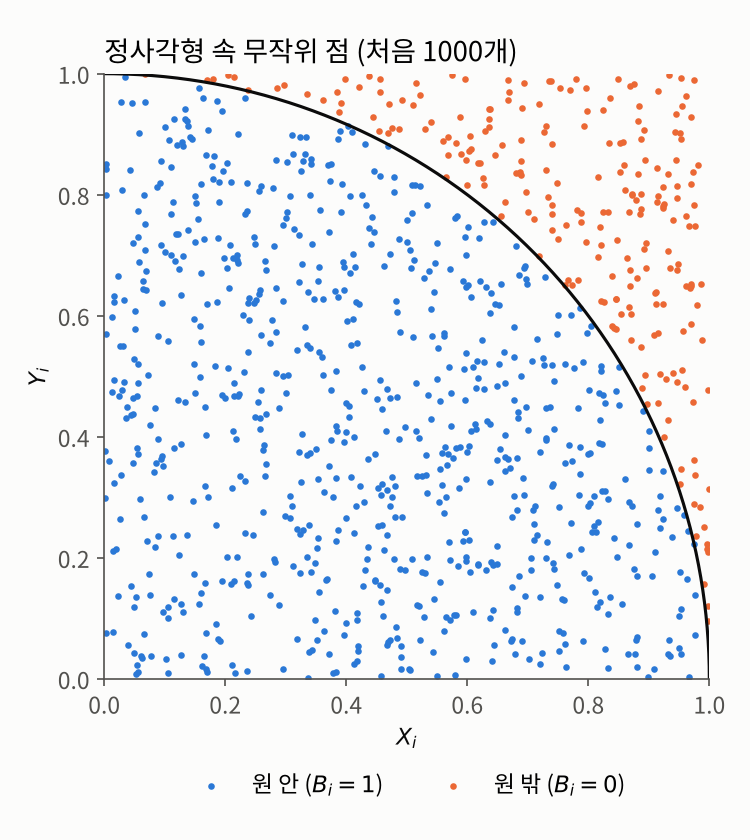
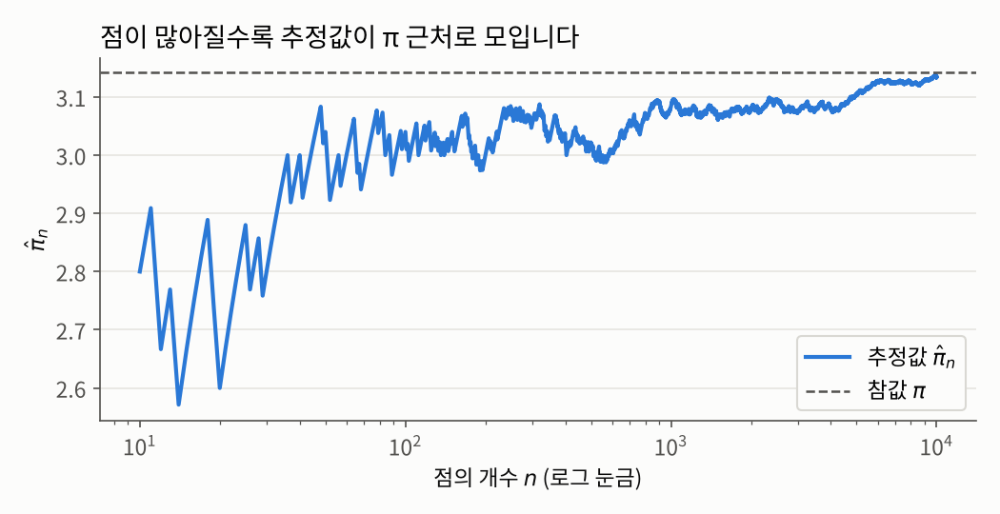

1 몬테카를로 시뮬레이션
1장 몬테카를로 시뮬레이션(Monte Carlo Simulation)
들어가며
과목 소개 글에서 우리는 공식으로 구할 수 없는 값을 “여러 번 해 보고 평균을 내서” 근사한다는 아이디어를 이야기했습니다. 이번 글에서는 이 아이디어가 실제로 어떻게 작동하는지 두 가지 예제로 살펴보겠습니다.
- 무작위로 점을 찍어 원주율 \(\pi\)를 구하는 문제
- 같은 아이디어로 정적분을 계산하는 문제
두 문제 모두 같은 순서로 진행합니다. 먼저 문제 상황을 소개하고, 접근 아이디어를 설명한 다음, 그 아이디어를 수학적으로 정확하게 표현하는 데 필요한 개념과 정리를 정의합니다. 마지막으로 그 도구들을 이용해 문제를 해결합니다.
이번 글에 등장하는 개념들은 대부분 확률론에서 이미 다루는 내용입니다. 그래서 정의와 정리의 내용은 정확히 적되, 증명은 측도론적 확률론 쪽을 참고하는 것으로 하고 넘어가겠습니다.
문제 1: 원주율 π 구하기
문제 상황
\(\pi \approx 3.14159\ldots\)라는 값을 전혀 모른다고 가정해 봅시다. 우리가 아는 것은 반지름이 \(1\)인 원의 넓이가 \(\pi\)라는 사실뿐입니다. 이때 무작위로 점을 찍는 실험만으로 \(\pi\)의 값을 알아낼 수 있을까요?
접근 아이디어: 다트 던지기
한 변의 길이가 \(1\)인 정사각형 \(S = [0,1]^2\) 위에, 원점을 중심으로 하는 반지름 \(1\)짜리 원의 4분의 1 조각을 그려 봅시다.
\[A := \{(x, y) \in S : x^2 + y^2 \le 1\}\]
정사각형의 넓이는 \(1\)이고, 사분원 \(A\)의 넓이는 \(\pi/4\)입니다.
이제 이 정사각형을 과녁 삼아 다트를 던진다고 상상해 봅시다. 그러면 직관적으로, 다트가 정사각형 안의 어느 곳에나 똑같이 고르게 떨어진다면, 다트가 사분원 안에 떨어질 확률은 두 넓이의 비율과 같을 것입니다.
\[\mathbb{P}(\text{다트가 } A \text{ 안에 떨어짐}) = \frac{A\text{의 넓이}}{S\text{의 넓이}} = \frac{\pi/4}{1} = \frac{\pi}{4}\]
즉, 원주율이라는 기하학적인 양이 확률로 바뀌었습니다. 그리고 확률은 실험을 반복하면 상대빈도로 근사할 수 있습니다. 다트를 \(N\)번 던져서 그중 사분원 안에 떨어진 비율을 구하면, 그 비율은 \(\pi/4\)에 가까울 것입니다. 여기에 \(4\)를 곱하면 \(\pi\)의 근삿값을 얻습니다.
이 아이디어를 정확한 수학으로 옮기려면 몇 가지를 분명히 해야 합니다. “어느 곳에나 똑같이 고르게”는 정확히 무슨 뜻인가요? 다트를 여러 번 “따로따로” 던진다는 것은요? 그리고 “비율이 확률에 가까워진다”는 것은 왜 성립할까요? 차례대로 정의해 보겠습니다.
필요한 개념들
“고르게 떨어진다”는 성질은 균등분포로 표현합니다.
즉 균등분포에서는 어떤 영역에 떨어질 확률이 그 영역의 크기에만 비례하고, 위치와는 상관이 없습니다. 앞의 접근 아이디어에서 “확률 = 넓이의 비율”이라고 한 것이 바로 이 정의입니다.
다음으로 다트를 “따로따로” 던진다는 성질, 즉 한 번의 결과가 다른 결과에 아무런 영향을 주지 않는다는 성질은 독립으로 표현합니다.
컴퓨터로 점을 찍을 때는 \(x\)좌표와 \(y\)좌표를 각각 \([0,1]\) 위의 \(\mathrm{Unif}[0,1]\)를 따르는 확률변수 \(X\), \(Y\)로 보고 따로 뽑습니다. 이렇게 해도 되는 이유는 직관적으로 생각하면 간단합니다. 우리가 만약 \(S\)의 임의의 점 \((x,y)\)를 하나 고른다면, \(x\), \(y\)의 값은 서로 서로 무관합니다. \(x = 1\)이라고 하더라도 \(y\)는 \([0,1]\)의 어떠한 숫자가 되더라도 이상하지 않으며, 반대도 성립합니다. 따라서 우리는 \(X,Y\)가 독립임을 전제로 이야기를 진행할 수 있습니다. 그리고 \(X, Y \sim \mathrm{Unif}[0,1]\)가 서로 독립이면, 점 \(P = (X, Y)\)는 정사각형 \(S\) 위의 균등분포를 따릅니다. 이는 직사각형 영역 \(C = [a,b] \times [c,d]\)에 대해서, \(C\)의 넓이가 \((b-a)(d-c)\)임을 이용하면 다음과 같이 바로 확인할 수 있습니다. \[\mathbb{P}(P \in C) = \mathbb{P}(a \le X \le b)\,\mathbb{P}(c \le Y \le d) = (b-a)(d-c) = \lambda(C)\] 일반적인 영역으로의 확장은 측도론의 표준적인 논증으로 처리됩니다.
이제 “다트가 원 안에 떨어졌는가?”라는 예/아니오 결과를 숫자로 바꿔야 평균을 낼 수 있습니다. 이때 쓰는 도구가 지시함수입니다.
여기서 다뤄지는 확률변수 \(B\)의 핵심은 마지막 식, 확률을 기대값으로 바꿔 준다는 데 있습니다. 확률은 직접 평균을 낼 수 없지만, 기대값은 표본평균으로 근사할 수 있기 때문입니다. 그 근사 가능성은 다음 정리에 의해 보장됩니다.
위 정리는 결국 \(i.i.d.\)인 확률변수들이 주어졌을 때, 그 주어진 확률변수의 갯수인 \(N\)이 충분히 크다면 확률변수의 기대값 \(\mathbb{E}[X_1]\)을 그저 \(X_1,...,X_N\)의 산술평균으로 근사할 수 있음을 말해줍니다.
이미 확률론을 공부하셨다면 아시겠지만, 위의 정리는 큰 수의 법칙의 두 버젼 중 강한 큰 수의 법칙에 해당됩니다. 강한 큰 수의 법칙은 보시다시피 거의 확실한(almost surely) 수렴성을 보여줍니다.
참고로 거의 확실하게라는 표현은 측도론의 거의 어디서나(almost everwhere)와 동치인 개념으로, 이를 우리의 맥락에서 해석하자면 표본평균이 참값으로 수렴하지 않는 경우가 생길 확률이 \(0\)이라는 뜻입니다. 예를 들어 동전을 아무리 던져도 앞면만 계속 나오는 경우는 논리적으로는 가능하지만 그 확률은 \(0\)이고, 그런 예외를 제외하면 수렴이 반드시 일어난다는거죠. 거의 확실한 수렴은 저렇게 뒤에 \(a.s.\)를 붙이는 방법으로 구분됩니다.
해결
이제 도구가 모두 갖춰졌습니다. 앞의 접근 아이디어를 알고리즘으로 정리하면 다음과 같습니다.
이 알고리즘이 왜 맞는지는 지금까지의 정의와 정리를 순서대로 엮으면 바로 보입니다.
- 점의 분포 (정의 1.1, 1.2): \(P_i := (X_i, Y_i)\)로 두면, \(X_i\)와 \(Y_i\)가 독립인 균등분포를 따르므로 이들을 결합한 \(P_i\)는 다시 정사각형 \(S\) 위의 균등분포를 따릅니다. 또한 \(P_1, \ldots, P_N\)은 서로 독립입니다.
- 확률로의 변환 (정의 1.3): \(B_i = \mathbf{1}_A(P_i)\)는 지시확률변수이므로 \(\mathbb{E}[B_i] = \mathbb{P}(B_i = 1) = \mathbb{P}(P_i \in A) = |A| / |S| = \pi/4\)입니다.
- 큰 수의 법칙 (정리 1.4): \(B_1, B_2, \ldots\)는 i.i.d.이고, \(0\)과 \(1\) 사이의 값만 가지므로 \(\mathbb{E}|B_1| \le 1 < \infty\)입니다. 따라서 \[\frac{B_1 + \cdots + B_N}{N} \xrightarrow[N \to \infty]{} \mathbb{E}[B_1] = \frac{\pi}{4} \quad \text{a.s.}\] 이고, 양변에 \(4\)를 곱하면 \(\hat{\pi} \to \pi\)입니다.
실제로 돌려 보겠습니다. 과목 소개 글에서 이야기한 대로, 결과를 재현할 수 있도록 시드를 고정했습니다.
import numpy as np
np.random.seed(2026)
N = 10_000
coords = np.random.rand(2, N) # 첫 행: X_1, ..., X_N / 둘째 행: Y_1, ..., Y_N
B = np.sum(coords**2, axis=0) <= 1 # B_i = 1{X_i^2 + Y_i^2 <= 1}
pihat = 4 * np.mean(B)
print(pihat)3.134아래 그림은 찍은 점들 중 처음 1,000개를 보여 줍니다. 파란 점은 사분원 안에 떨어진 점(\(B_i = 1\)), 주황 점은 바깥에 떨어진 점(\(B_i = 0\))입니다.

점을 하나씩 늘려 가면서 추정값 \(\hat{\pi}_n = 4(B_1 + \cdots + B_n)/n\)이 어떻게 변하는지도 살펴볼 수 있습니다.
estimates = 4 * np.cumsum(B) / np.arange(1, N + 1)
print(estimates[[9, 99, 999, 9999]]) # n = 10, 100, 1000, 10000[2.8 3.04 3.084 3.134]
점이 적을 때는 추정값이 크게 흔들리지만, 점이 많아질수록 참값 \(\pi\) 근처로 모여드는 것을 볼 수 있습니다. 큰 수의 법칙이 눈앞에서 일어나고 있는 셈입니다.
다만 점을 만 개나 찍었는데도 정확한 자릿수는 고작 두 자리 정도입니다. 이 수렴이 얼마나 빠른지는 큰 수의 법칙만으로는 알 수 없고, 이는 다음 글들에서 다룰 중요한 질문입니다.
문제 2: 정적분 구하기
문제 상황
이번에는 다음 정적분을 계산해 봅시다.
\[\ell := \int_0^1 e^{-x^2}\, dx\]
통계학에서 정규분포를 다룰 때마다 나오는 바로 그 함수입니다. 이 \(e^{-x^2}\)은 부정적분을 우리가 아는 공식의 형태로 나타낼 수 없어, 일반적인 1차원 적분 방식으로는 계산할 수 없다는걸로 유명합니다. 이런 함수들은 닫힌 공식을 통한 계산이 가능한 방법이 있다고 하더라도, 사실 그 방법을 따라서 머리를 굴려가며 계산하는 것에 비해 수치적인 방법으로 근사적 계산을 하는 것이 더 유리한 경우가 많습니다.
이런 문제 상황(닫힌 공식을 통한 계산이 비효율적인)을 조금 더 일반적으로 다루기 위해 연속함수 \(H: [0,1] \to \mathbb{R}\)에 대해 \(\ell := \int_0^1 H(x)\, dx\)를 계산하는 문제를 생각하겠습니다.
접근 아이디어: 적분은 평균 높이다
정적분 \(\int_0^1 H(x)\,dx\)는 그래프 아래의 넓이입니다. 그런데 구간의 길이가 \(1\)이므로, 이 넓이는 곧 구간 길이 \(\times\) 그래프의 평균 높이 \(= 1 \times\) (평균 높이)로 볼 수도 있습니다.
그렇다면 평균 높이는 어떻게 구할까요? 구간 \([0,1]\)에서 위치 \(x\)를 무작위로 고르게 골라 높이 \(H(x)\)를 재는 일을 여러 번 반복하고, 그 높이들의 평균을 내면 됩니다. 문제 1과 똑같은 아이디어입니다. 이번에는 “원 안에 떨어졌는가”라는 \(0\) 또는 \(1\)의 값 대신 높이 \(H(x)\)를 평균 낸다는 점만 다릅니다.
이 아이디어를 정당화하려면, “무작위로 고른 위치에서의 평균 높이”, 즉 \(\mathbb{E}[H(U)]\)가 정말로 적분값 \(\int_0^1 H(x)\,dx\)와 같다는 것을 보여야 합니다.
필요한 개념
균등분포를 따르는 확률변수 \(U\)는 확률밀도함수로도 표현할 수 있습니다. \(U \sim \mathrm{Unif}[0,1]\)의 밀도함수는 구간 \([0,1]\)에서만 \(1\)이고 나머지에서는 \(0\)인 함수, 즉 \(f_U = \mathbf{1}_{[0,1]}\)입니다. 실제로 \(\mathbb{P}(a \le U \le b) = \int_a^b \mathbf{1}_{[0,1]}(x)\,dx = b - a\)가 되어 정의 1.1과 일치합니다.
확률변수 자체가 아니라 확률변수에 함수를 씌운 것의 기대값을 계산할 때는 다음 정리를 씁니다.
이 정리는 확률변수 \(X\)를 \(h\)로 변환한 이후에도 적분 가능성만 보장된다면, \(h(X)\)의 분포를 따로 구하지 않고도 \(X\)의 밀도함수만으로 \(h(X)\)의 기대값을 계산할 수 있음을 말해줍니다. 영어권에서는 이 편리함 때문에 반쯤 농담으로 “무의식적인 통계학자의 법칙”(law of the unconscious statistician, LOTUS)이라고 부르기도 합니다.
해결
접근 아이디어를 알고리즘으로 정리하면 다음과 같습니다.
이 알고리즘이 맞다는 것은 다음과 같이 확인할 수 있습니다.
- 적분 가능성: \(H\)는 닫힌 유계 구간 \([0,1]\)에서 연속이므로 유계입니다. 즉 어떤 상수 \(M\)이 있어 \(|H(x)| \le M\)입니다. 따라서 \(\mathbb{E}|H(X_1)| \le M < \infty\)이고, 정리 1.6의 조건이 만족됩니다.
- 기대값 = 적분 (정리 1.6): \(X_1\)의 밀도함수가 \(\mathbf{1}_{[0,1]}\)이므로 \[\mathbb{E}[H(X_1)] = \int_{\mathbb{R}} H(x)\, \mathbf{1}_{[0,1]}(x)\, dx = \int_0^1 H(x)\, dx = \ell\] 입니다.
- 큰 수의 법칙 (정리 1.4): \(X_1, X_2, \ldots\)가 i.i.d.이므로 \(H(X_1), H(X_2), \ldots\)도 i.i.d.입니다. 따라서 \[\hat{\ell} = \frac{1}{N} \sum_{i=1}^{N} H(X_i) \xrightarrow[N \to \infty]{} \mathbb{E}[H(X_1)] = \ell \quad \text{거의 확실하게}\] 입니다.
\(H(x) = e^{-x^2}\)으로 실제 계산해 보겠습니다. 비교를 위해 하나를 더 계산합니다. \(H(x) = \sqrt{1 - x^2}\)은 바로 사분원의 경계선이므로 \(\int_0^1 \sqrt{1-x^2}\,dx = \pi/4\)이고, 여기에 \(4\)를 곱하면 다시 \(\pi\)를 얻습니다.
np.random.seed(2026)
for N in [100, 10_000, 1_000_000]:
U = np.random.rand(N)
print(f"N = {N:>9,}: e^(-x^2) 적분 ≈ {np.mean(np.exp(-U**2)):.5f}, "
f"4·√(1-x²) 적분 ≈ {4*np.mean(np.sqrt(1-U**2)):.5f}")N = 100: e^(-x^2) 적분 ≈ 0.74611, 4·√(1-x²) 적분 ≈ 3.09585
N = 10,000: e^(-x^2) 적분 ≈ 0.74596, 4·√(1-x²) 적분 ≈ 3.13935
N = 1,000,000: e^(-x^2) 적분 ≈ 0.74672, 4·√(1-x²) 적분 ≈ 3.14129\(\int_0^1 e^{-x^2}\,dx\)의 참값은 오차함수 \(\mathrm{erf}\)를 이용해 \(\frac{\sqrt{\pi}}{2}\,\mathrm{erf}(1) \approx 0.74682\)로 나타낼 수 있습니다.1 부정적분을 구하지 않고도, 균등난수 몇 줄만으로 참값에 가까운 답을 얻었습니다.
정리: 두 예제가 공유하는 구조
두 문제를 나란히 놓고 보면 같은 구조가 보입니다. 사실 문제 1은 문제 2의 특수한 경우입니다. 문제 1의 점 \(P_i\)를 정사각형 위의 균등한 무작위 점으로 보고, 높이 함수로 \(0\) 또는 \(1\)만 취하는 지시함수 \(\mathbf{1}_A\)를 쓴 것일 뿐입니다.
| 구하려는 값 | 무작위 표본 | 평균 내는 값 | |
|---|---|---|---|
| 문제 1 | \(\pi/4 = \mathbb{P}(P \in A)\) | \(P_i \sim \mathrm{Unif}([0,1]^2)\) | \(\mathbf{1}_A(P_i)\) |
| 문제 2 | \(\ell = \int_0^1 H(x)\,dx\) | \(X_i \sim \mathrm{Unif}[0,1]\) | \(H(X_i)\) |
두 경우 모두 다음 형태로 정리됩니다.
\[\ell = \mathbb{E}[h(U)], \qquad \hat{\ell} = \frac{1}{N} \sum_{i=1}^{N} h(U_i)\]
즉, 구하고 싶은 값을 어떤 확률변수의 기대값으로 표현하고, 그 확률변수의 독립인 표본을 많이 뽑아 평균을 낸다는 것입니다. 이것이 바로 과목 소개 글에서 소개한 몬테카를로 방법의 기본 형태이며, 앞으로 이 과목 전체에서 반복해서 등장하는 틀입니다.
덧붙여, 문제 2에서 \(H\)의 연속성은 \(\mathbb{E}|H(X_1)| < \infty\)를 보장하기 위해 쓰였을 뿐입니다. 큰 수의 법칙이 요구하는 것은 적분 가능성이므로, \(\int_0^1 |H(x)|\,dx < \infty\)이기만 하면 \(H\)가 연속이 아니어도 같은 방법이 그대로 통합니다.
한편 이번 글은 몇 가지 질문을 남깁니다.
- 균등난수는 어디서 오는가? 두 알고리즘 모두 첫 단계가 “균등난수(\(\mathrm{Unif}[0,1]\)에 따라 생성된 \([0,1]\)범위의 랜덤한 숫자)를 생성한다”입니다. 과목 소개 글에서 보았듯이 컴퓨터가 만드는 것은 유사 난수인데, 이것을 어떻게 만들고, 왜 i.i.d. 균등난수처럼 다뤄도 되는지는 아직 답하지 않았습니다.
- 얼마나 정확한가? 큰 수의 법칙은 “언젠가는 수렴한다”는 것만 보장합니다. 문제1에서 파이를 근사할 때 점 만 개로 겨우 파이의 두 자리를 맞힌 것을 보면, 원하는 정확도를 얻으려면 \(N\)이 얼마나 커야 하는지, 오차를 어떻게 추정하는지가 중요한 문제가 됩니다.
- 결정론적 방법보다 나은가? 1차원 적분은 사다리꼴 공식이나 심프슨 공식 같은 결정론적 수치적분으로도 계산할 수 있습니다. 몬테카를로 방법이 이런 방법들과 비교해 언제 유리한지도 따져 볼 필요가 있습니다.
- 다른 확률분포도 생성이 가능한가? 위의 모든 문제에서 생성되는 난수들은 모두 균등난수였습니다. 그런데 당연히 이 세상에는 그거보다 더 복잡한 확률분포를 띄는 구조들이 더 많고, 이에 따라서 우리는 그런 확률분포의 값들도 생성이 가능한지를 고민해볼 필요가 있습니다.
이 질문들이 앞으로 이어질 글들의 출발점입니다.
연결되는 개념
- \(\leftarrow\) 이전 개념: 확률적 시뮬레이션 과목 소개
- \(\rightarrow\) 다음 개념: 1.1 선형 합동 생성기
Footnotes
오차함수는 \(\mathrm{erf}(z) := \frac{2}{\sqrt{\pi}} \int_0^z e^{-t^2}\,dt\)로 정의되는 특수함수입니다. 즉 이 값은 “계산했다”기보다 이 적분 자체에 이름을 붙여 둔 것에 가깝고, 실제 수치는 별도의 수치 근사 알고리즘으로 구합니다.↩︎